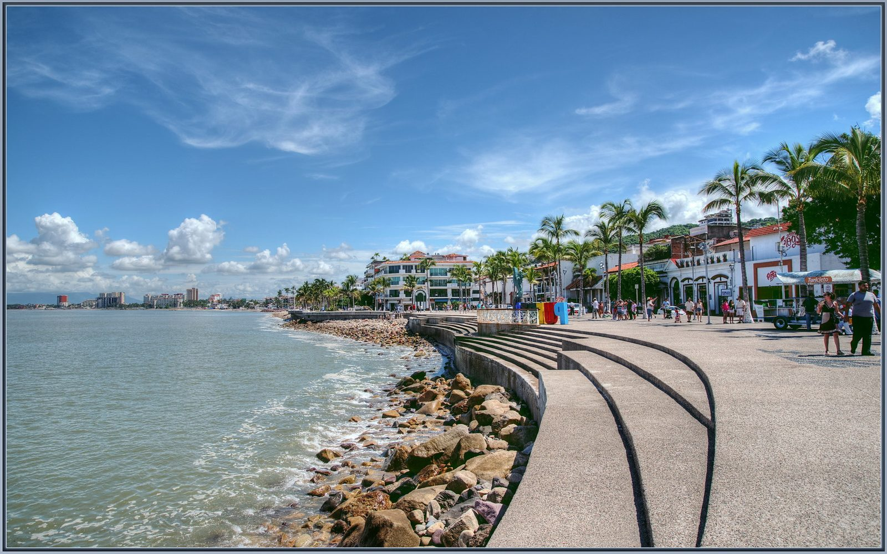
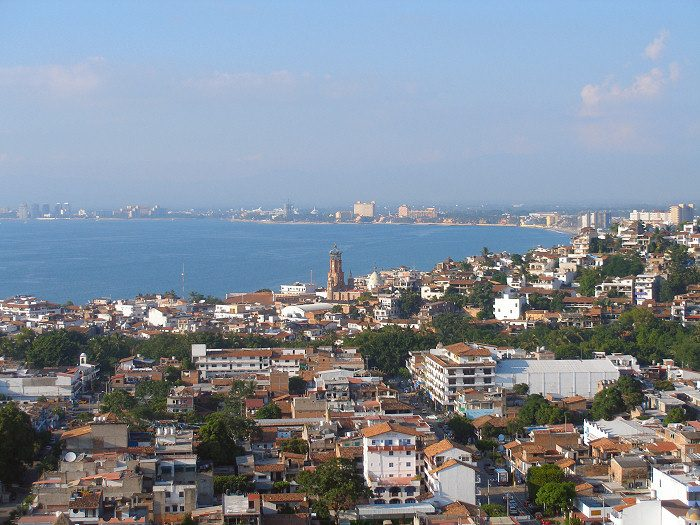
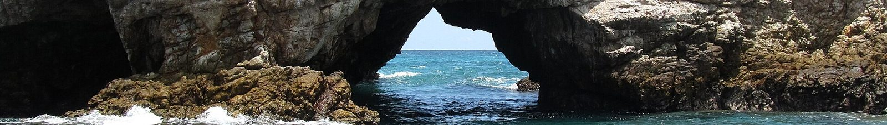
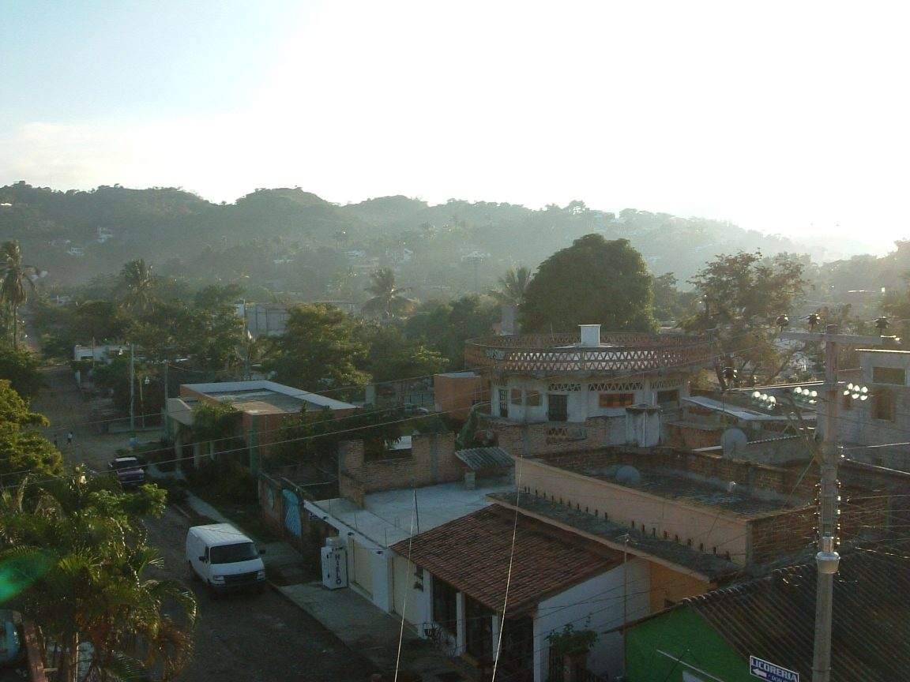
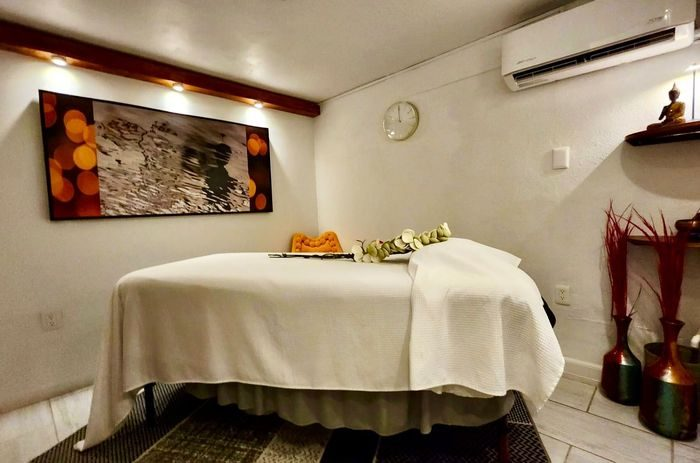
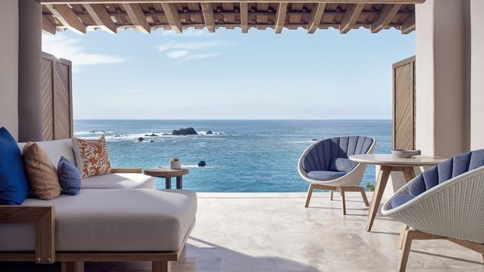

Arrive
Settle into your resort.
Warmer and more laid-back than Cabo — cobblestone streets, a real old-town feel, jungle backdrop meeting the beach. Less glossy-resort, more authentic-Mexico. 7 days on the ground, about 8 door-to-door.


Shoulder: late October specifically — rainfall tapers off and this becomes the most pleasant stretch.
Riskier: July–September, same hurricane-season logic as Cabo but on the Pacific mainland side.
Lean toward the very end of your window here, same as Cabo.
A week mostly at a boutique Zona Romántica hotel like Zona Z (TripAdvisor's #1 small hotel in PV, ~$150–250/night) with a couple of splurge nights at Four Seasons Punta Mita (~$1,300/night, pricier than it used to be) keeps lodging to about $2,500. Food and activities here are genuinely inexpensive — total lands around $4,000, roughly half the budget. The cheapest destination on this list, precisely because "authentic, not glossy-resort" translates into real savings.
Genuinely muggy, more so than Cabo — but late October is called out as an especially pleasant stretch as rainfall tapers off.
Settle into your resort.
Cobblestone streets, boardwalk sculptures, sunset dinner overlooking the bay.

Snorkeling, the famous "hidden beach."
Recommended: Marietas Islands snorkel tour + Hidden Beach ↗
Bohemian surf towns north of PV, a nice change of scene.
Spa.
Sierra Madre foothills, if you want one adventure day.
Final dinner.
Fly home.
Adults-only, TripAdvisor's #1 small hotel in Puerto Vallarta — top 1% of hotels worldwide by their ranking. Central in the Romantic Zone.

Just north of PV — the splurge, pricier than a quick glance suggests.
